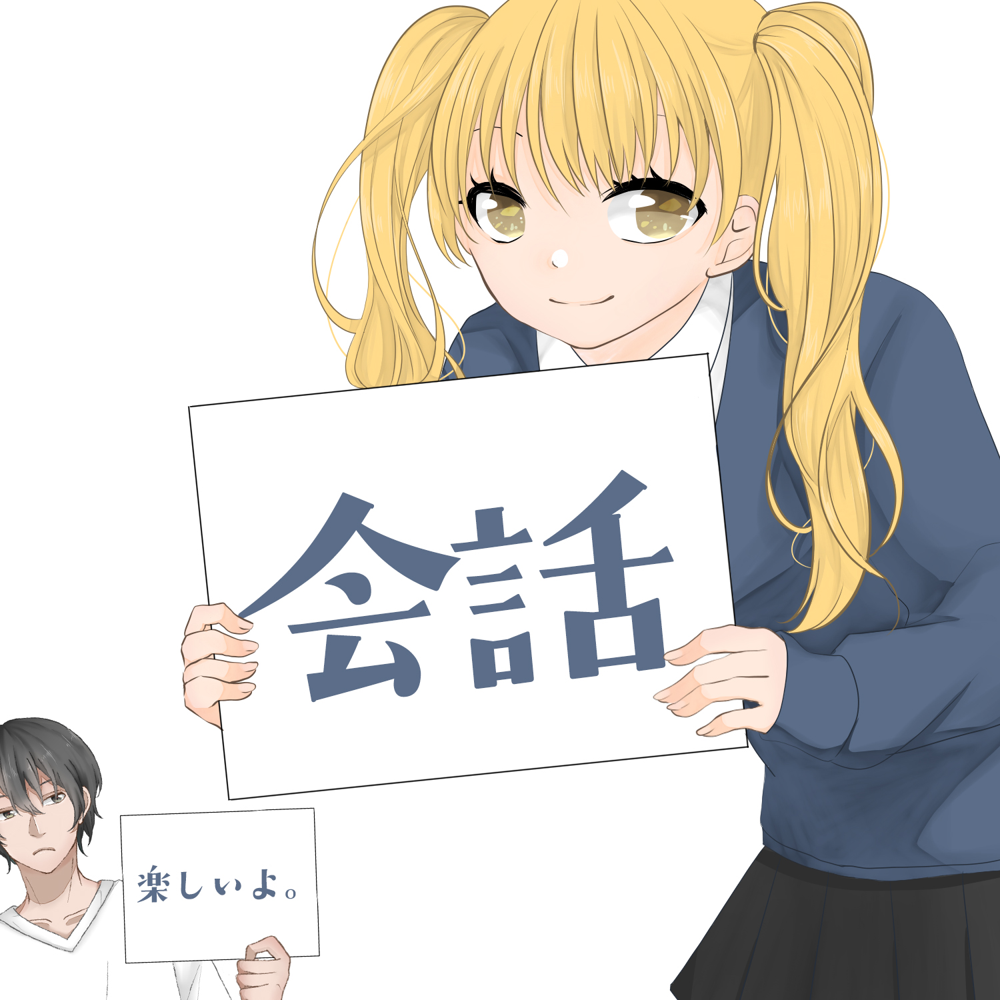

Varje söndag träffas vi och pratar japanska i lugn takt. Du är välkommen varesig du har studerat i flera år eller nyligen börjat.
Kom när du kan. Säg så mycket eller så lite du vill. Vi hjälps åt när någon kör fast. Målet är att ha trevligt och att man ska se fram emot söndagen.
Så går det till
Vi samlas på vuxenskolan söndagar kl 16:00. Ibland finns ett löst tema och ibland följer vi konversationen dit den tar oss. Vi delar upp oss om vi blir många så att ingen ofrivilligt sitter tyst.
Tårta: söndag 20 september 2026 kl 16:00 bjuder Oskar på tårta innan dom flyger iväg till Japan. Läs mer.
